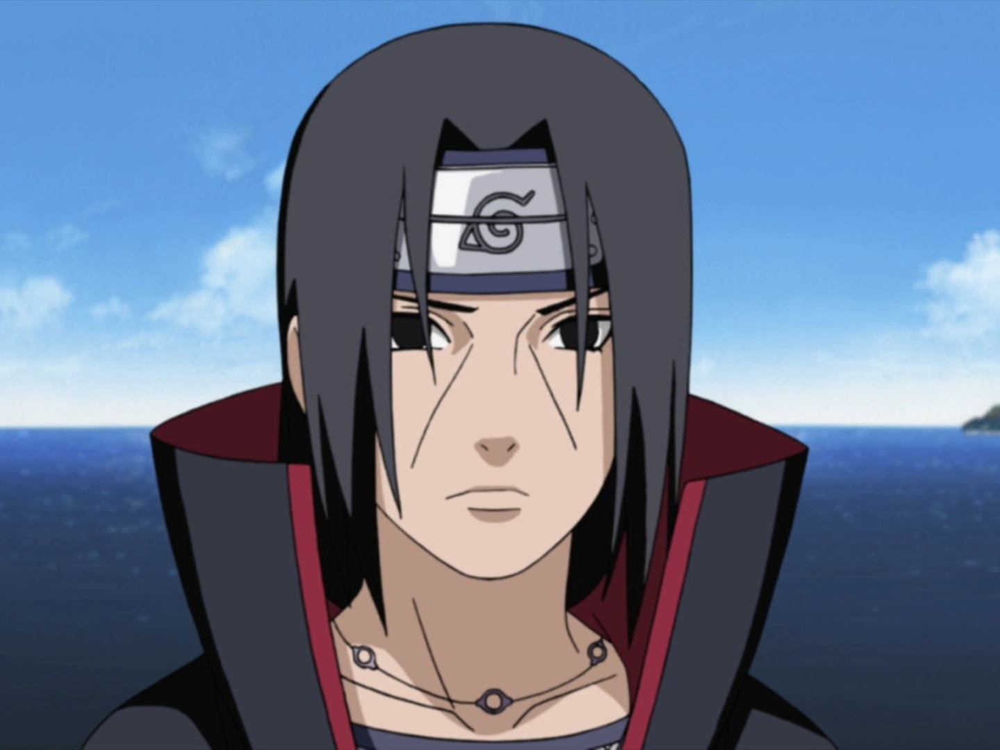
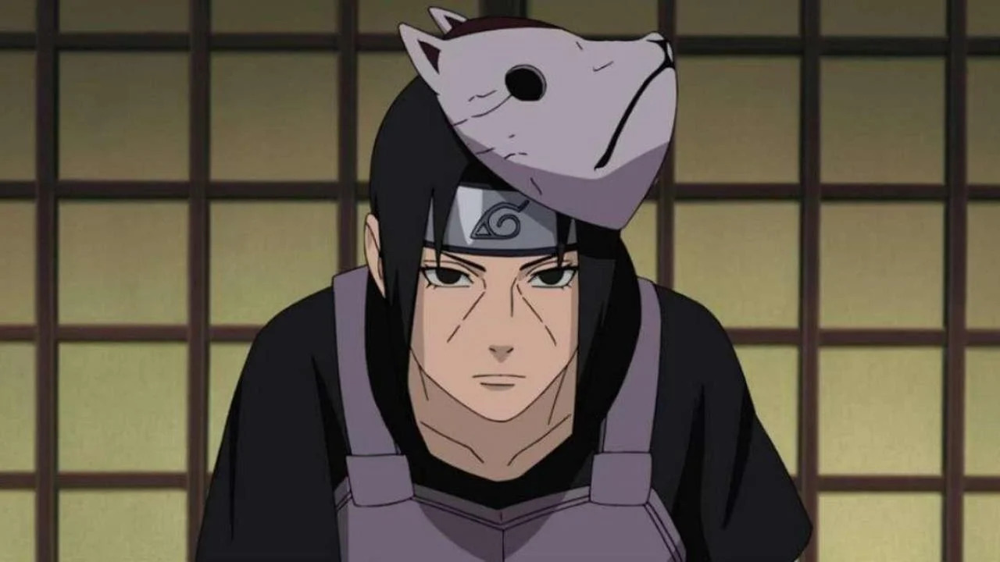
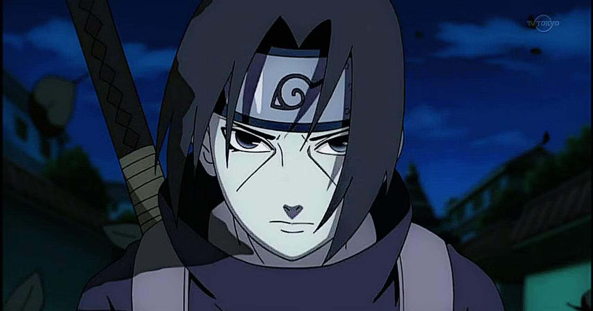
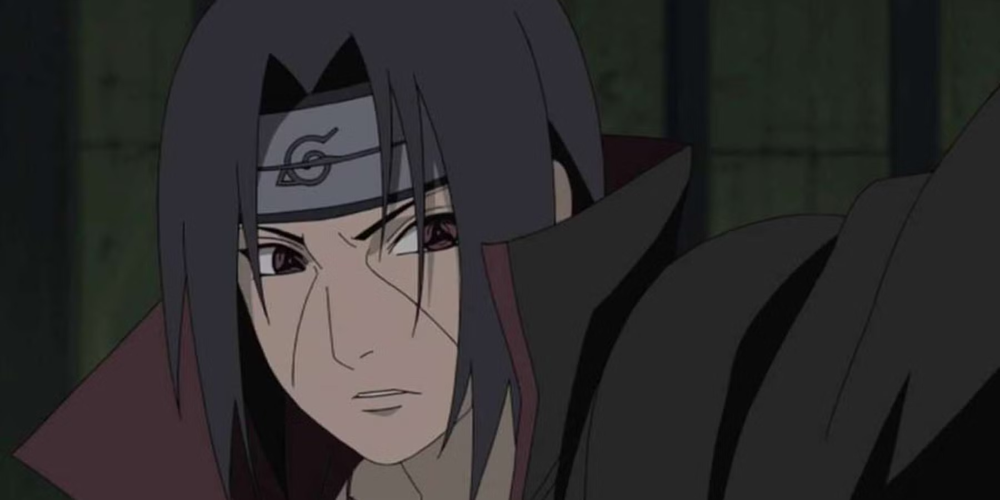
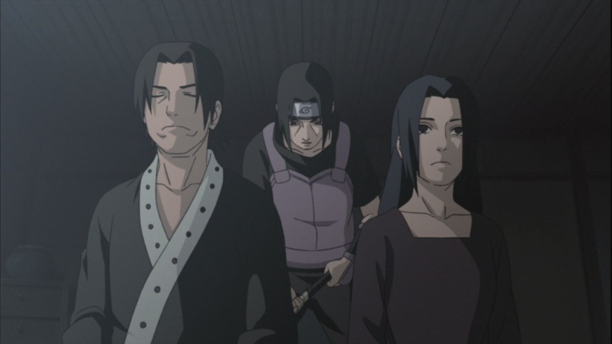
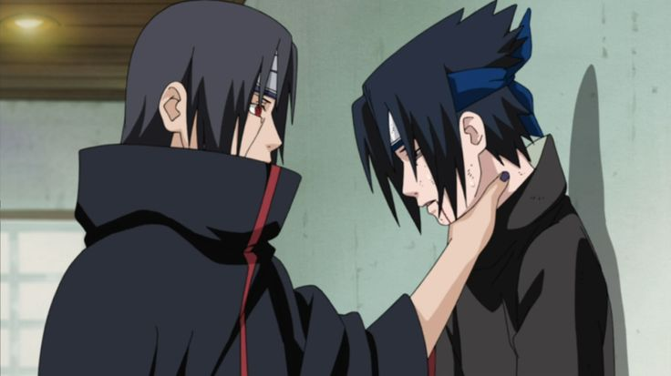
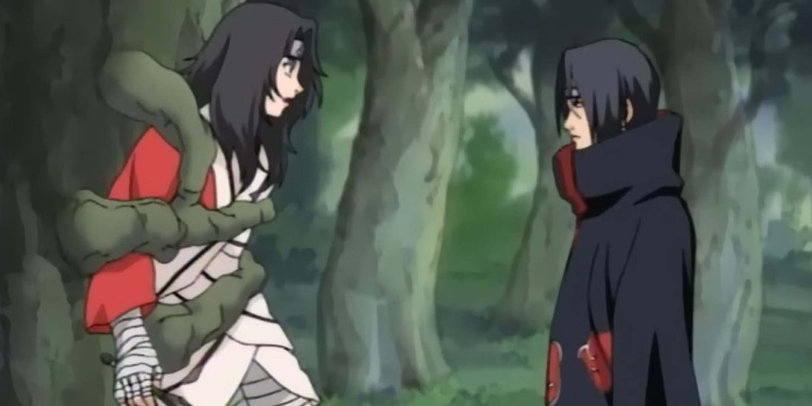
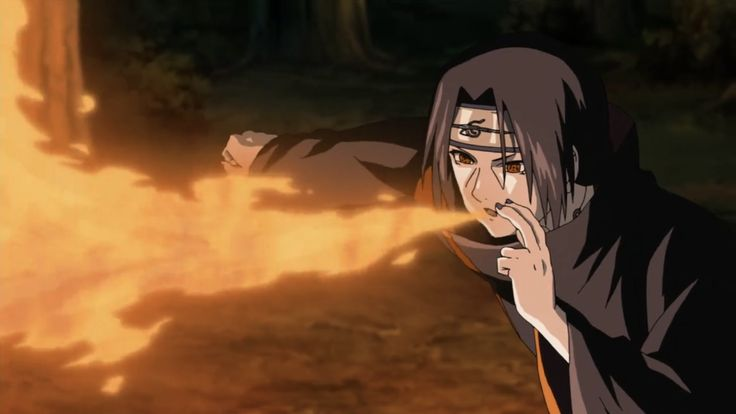
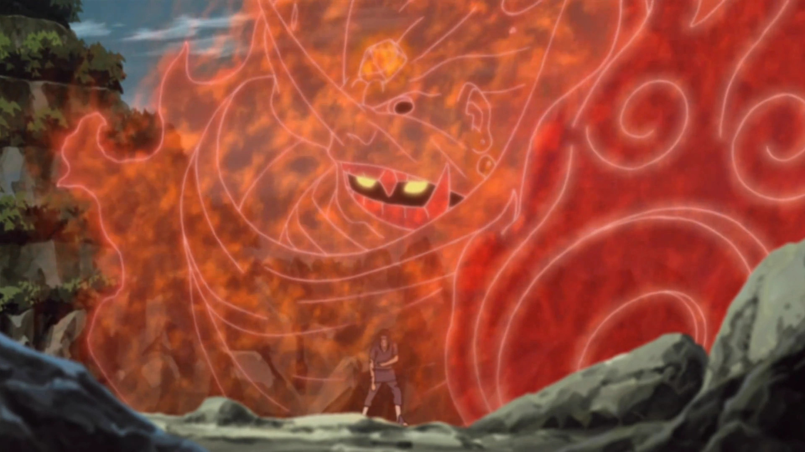
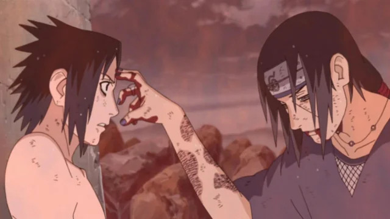

Itachi Uchiha

Itachi Uchiha, a name that resonates with both tragedy and profound devotion, stands as one of the most enigmatic and compelling figures in the Naruto universe.
Name Meaning
His given name, "Itachi" (鼬), literally translates to "weasel" in Japanese, a creature often associated with cunning, stealth, and sometimes even bad omens or ill omens in Japanese folklore. This seemingly innocuous name belies the immense complexity and the often-misunderstood nature of his character.

Introduced early in the series as a formidable antagonist, a rogue ninja responsible for the massacre of his entire clan, Itachi initially appears to embody pure evil and a chilling indifference to human life. However, as the narrative unfolds, layers of his true motivations are painstakingly revealed, transforming him from a villain into a tragic hero whose unwavering love for his village and his younger brother, Sasuke, dictated a path of unimaginable sacrifice and suffering.
Biography


Itachi Uchiha was a prodigy of the Uchiha clan, renowned for his exceptional skill in Ninjutsu, Genjutsu, and Taijutsu from a young age, mastering the Sharingan and Mangekyo Sharingan. He quickly rose through the ranks of the Konoha ANBU, becoming a captain at an incredibly young age. Under the orders of the Konoha elders, he tragically massacred his entire clan, sparing only his younger brother, Sasuke. Following this devastating mission, Itachi joined the Akatsuki, an infamous criminal organization, acting as a double agent to protect Konoha from the shadows.
Backstory



Driven by a profound sense of duty and the immense burden of his mission, Itachi made the agonizing choice to sacrifice his family and reputation to prevent a civil war within Konoha. To solidify his new persona as a traitor and to ensure Sasuke would grow strong enough to eventually avenge their clan, Itachi intentionally tormented his brother with the illusion of his betrayal and the weight of their clan's demise. This act of psychological torture was a calculated, painful maneuver designed to push Sasuke towards a path of extreme power.
Profile



Itachi's life culminated in a final, predetermined battle with Sasuke, where he meticulously orchestrated his own death at his brother's hands. This act was not out of weakness, but a desperate and loving final gift: to transfer his Mangekyo Sharingan powers to Sasuke and to cleanse him of Orochimaru's curse mark, all while ensuring Sasuke truly believed he had surpassed him. In his last moments, Itachi finally conveyed his unwavering love for Sasuke, breaking the illusion of hatred and revealing the true depth of his sacrifice, leaving Sasuke with the crushing truth of his brother's profound devotion.